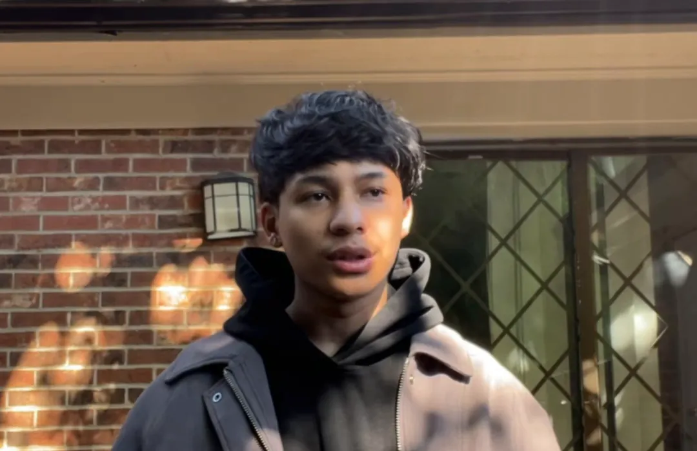

Software · AI · Systems
KriteshDhungel
I build software people actually use: the tools a phone repair shop runs on every day, a multi-model AI reasoning system, and a traceable marketplace for a business in Nepal.

- Now
- CS student, Forsyth Tech
- Work
- Repair tech + internal tools
- From
- Kathmandu, Nepal
- Open to
- Software internships
01
Selected work
Real tools, most of them in use. Private projects are marked and have no link until they are public.
More work

Same roads / new perspectives
Builtdifferently.
02
About
I moved from Nepal to the United States alone at eighteen, in January 2025. Since then I have been learning two things at once: how a new country works, and how to build software that holds up.
Most of what I know I taught myself before a class asked me to. I learn by shipping something small, watching where it breaks, and fixing it. That is how a timesheet for coworkers turned into a parts-lookup tool the whole shop now uses.
Before code, I fixed phones, first at a repair counter in Kathmandu and now in Greensboro. I still do. It taught me to diagnose before guessing, which turns out to be most of software too. I also play music and speak four languages.
- 2tools coworkers use every week
- 4AI models orchestrated in ARIA
- 4languages spoken
- 3states lived in since 2025
03
Experience & education
Experience
-
2025 — now
Repair technician & internal tooling
iFixandRepair · Greensboro, NC
Phone repairs and diagnostics, plus the software behind the counter: the price lookup system staff search all day, and the timesheet coworkers use every week. Also inventory and day-to-day operations.
-
2022 — 2024
Repair technician & sales
JPG Cellphone Repair · Kathmandu, Nepal
Diagnosis and repairs, and the customer side of the counter.
Education
-
2025 — now
Associate in Science, computer science track
Forsyth Technical Community College
Planning to transfer to a UNC-system university.
-
2025
Undergraduate studies
Wright State University · Dayton, Ohio
-
May 2026
04
Skills
On the bench
- HIMVEDAFinishing the producer-to-buyer traceability flow and the owner's studio.
- WitnessBuilding the truth layer before the camera rig exists.
- CourseworkAssociate in Science, aiming to transfer into the UNC system.
- Looking forA software engineering internship on real systems.
05
Journey
06